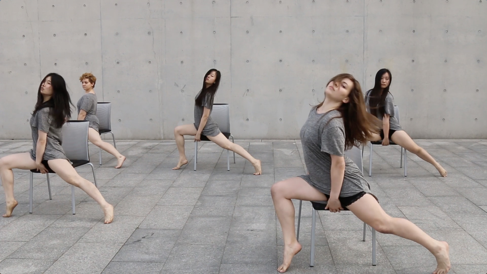

Artwork //as exploration
VR Game //game as art
with Camera //for fun, aesthetically
about

Black wave & Black fish
Black wave & black fish
, along with
Turning Point
, is part of a dance project
New Dance for Camera
directed by artist Aly Rose. Grace was the head photographer and cameraman of the project.
details from ShanghART Gallery ->
copytight © Grace Z Gao 2019